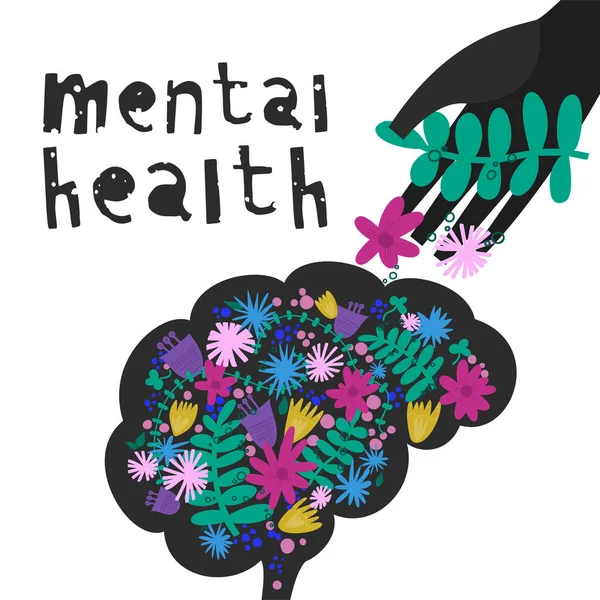
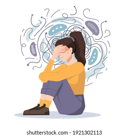

নিজের যত্ন নেওয়া মানে শুধু শারীরিক নয়,
মানসিক এবং আবেগীয় দিক থেকেও নিজেকে সম্মান এবং ভালোবাসা দেয়া। আধুনিক জীবনের ব্যস্ততায় আমরা
অনেক সময়
নিজেদের উপেক্ষা করি, যা আমাদের সুস্থতা ও সুখের জন্য ক্ষতিকর। তাই প্রতিদিন একটু সময় নিজেকে
দিন—যেমন
ভালো খাবার খাওয়া, পর্যাপ্ত বিশ্রাম নেয়া, প্রিয় কোনো কাজ করা বা শান্তি পাওয়ার জন্য ধ্যান করা।
নিজের
অনুভূতিকে গুরুত্ব দিন, কঠিন মুহূর্তে নিজেকে সমবেদনা দেখান এবং প্রয়োজনে সাহায্য নিতে দ্বিধা
করবেন
না। নিজের যত্ন নেয়া মানে জীবনের প্রতি দায়বদ্ধ থাকা এবং সুখী, সুস্থ জীবন যাপনের জন্য প্রথম
ধাপ
নেওয়া। মনে রাখবেন, আপনি যত্ন নিলে আপনি আরও শক্তিশালী হয়ে উঠবেন, এবং অন্যদের সাহায্য করতেও
সক্ষম
হবেন।
Last updated 3 mins ago

আজকের ব্যস্ত ও চাপপূর্ণ জীবনে আমরা শারীরিক
যত্নের পাশাপাশি আমাদের মনের যত্ন নেওয়াটাও খুব জরুরি। মনের সুস্থতা আমাদের জীবনের প্রতিটি
ক্ষেত্রে
সফলতার মূল চাবিকাঠি। যখন আমরা নিজেদের অনুভূতি বুঝে তা প্রকাশ করতে পারি, নিজের জন্য সময় বের
করি,
এবং ভালো লাগে এমন কাজ করি — তখন আমাদের মন শান্ত ও স্থিতিশীল থাকে। নিজের প্রতি সহানুভূতিশীল
হওয়া,
চাপের মুহূর্তে একটু বিশ্রাম নেওয়া, ধ্যান-যোগের মাধ্যমে মানসিক প্রশান্তি অর্জন করা, এসবই
মনের
যত্নের অংশ। এছাড়া, যারা কঠিন সময়ের মধ্যে আছেন, তাদের জন্য প্রয়োজন সঠিক সহায়তা নেওয়া,
কারো সাথে
কথা বলা এবং পেশাদার সাহায্য নেওয়াও অত্যন্ত গুরুত্বপূর্ণ। মনে রাখবেন, মনের যত্ন নেয়া কোনো
স্বার্থপরতা নয়, বরং এটি আমাদের নিজেকে ভালো রাখার এবং জীবনের সকল চ্যালেঞ্জ মোকাবেলা করার জন্য
অপরিহার্য। তাই আজ থেকেই শুরু করুন, মনের যত্ন নিন, এবং নিজের জীবনে সুখ ও শান্তি বজায় রাখুন।
Last updated 15 mins ago
ভয় হল আমাদের জীবনের এক প্রাকৃতিক
অনুভূতি,
যা আমাদের সুরক্ষা দেয় বিপদ থেকে দূরে থাকার জন্য। কিন্তু কখনো কখনো ভয় আমাদের অগ্রগতির পথে
বাধা হয়ে
দাঁড়ায়। যখন ভয় আমাদের মনে বাসা বাঁধে, তখন আমরা নতুন সুযোগ গ্রহণ করতে ভয় পাই, স্বপ্ন পূরণের
জন্য
প্রয়োজনীয় ঝুঁকি নিতে দ্বিধা করি এবং নিজের সামর্থ্যের উপর বিশ্বাস হারিয়ে ফেলি। তাই ভয়কে জয়
করা
অত্যন্ত গুরুত্বপূর্ণ। ভয়কে জয় করার অর্থ হলো — নিজের মধ্যে সাহস গড়ে তোলা, ভয়কে চিহ্নিত করা
এবং তার
মোকাবিলা করার জন্য পরিকল্পিত পদক্ষেপ নেয়া। এটি কখনোই সহজ নয়, তবে ধৈর্য, আত্মবিশ্বাস এবং ধাপে
ধাপে
এগিয়ে চলার মাধ্যমে সম্ভব। ভয়কে জয় করার জন্য প্রয়োজন নিজেকে বোঝা, নিজের সীমাবদ্ধতা ও সম্ভাবনা
চিনে
নেয়া এবং প্রয়োজনে কারো সাহায্য নেওয়া। নিজের ভয়ের সামনে সোজাসুজি দাঁড়িয়ে তাকে পার হওয়া মানে
নিজেকে
শক্তিশালী করা এবং জীবনে নতুন দ্বার উন্মোচন করা। মনে রাখবেন, ভয়কে জয় করা মানেই নতুন সম্ভাবনার
সূচনা
এবং নিজের জীবনের নিয়ন্ত্রণ ফিরে পাওয়া। তাই আর দেরি না করে, আজ থেকেই সাহসী হোন, নিজের ভয়কে জয়
করুন
এবং জীবনের প্রতি মুহূর্ত উপভোগ করুন।
Last updated 2 hours ago
এমবিবিএস, এফসিপিএস (সাইকো)
বিশ্ব
স্বাস্থ্য সংস্থা (ভারত)
মানসিক রোগবিশেষজ্ঞ পরিচালক ও অধ্যাপক(অবঃ) মানসিক হাসপাতাল
পাবনা

এমবিবিএস, এফসিপিএস (সাইকো)
বিশ্ব
স্বাস্থ্য সংস্থা
মানসিক রোগ বিশেষজ্ঞ ও অধ্যাপক ঢাকা মেডিকেল কলেজ হাসপাতাল, ঢাকা
এমবিবিএস, এফসিপিএস (হৃদরোগ)
হৃদরোগ
বিশেষজ্ঞ ও অধ্যাপক (অবঃ) রাজশাহী মেডিকেল কলেজ হাসপাতাল, রাজশাহী

এফসিপিএস (সাইকো)
মানসিক রোগ বিশেষজ্ঞ
ও অধ্যাপক মানসিক হাসপাতাল চট্টগ্রাম